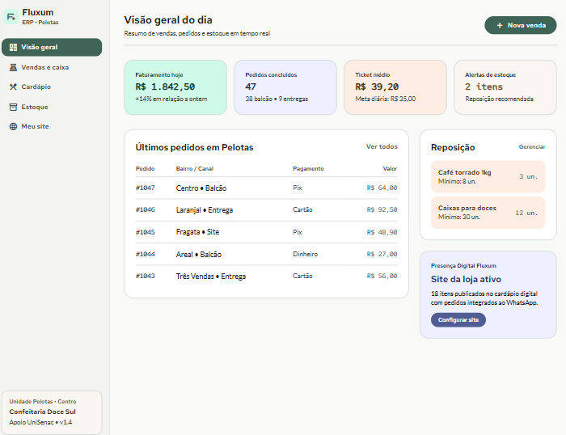
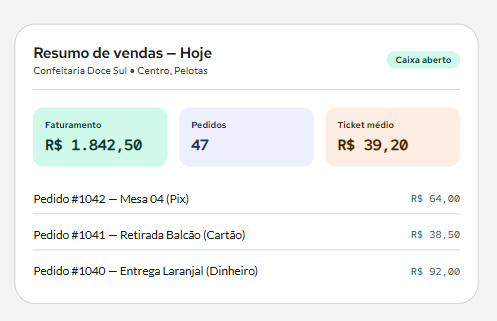
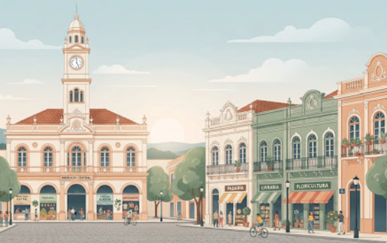

Projeto UniSenac - Centrado em Pelotas/RS
Seu negócio de Pelotas no Mercado Digital, sem complicação.
A Fluxum une um sistema ERP simples e completo a um pacote digital sob medida para pequenas empresas pelotenses: Criamos seu site do zero e organizamos cardápio, vendas e estoque em um só lugar.
Tudo o que sua empresa precisa para vender online e no balcão
Em vez de contratar ferramentas separadas, você recebe um pacote integrado para colocar seu negócio na internet e gerenciar o dia a dia.Site criado do zero
Presença profissional
Desenvolvemos a página da sua loja com endereço próprio, horário de funcionamento e contato direto no WhatsApp.Gestão de cardápio
Atualização Instantânea
Cadastre pratos, lanches e combos com o preço, título e todas opções pelo computador ou celular, pausando itens esgotados com um clique.Controle de Vendas
Caixa sempre em dia
Registre pedidos do balcão e entregas, visualize entradas por forma de pagamento e feche o caixa sem planilhas.Monitoramento de produtos
Estoque inteligente
Receba avisos quando um produto atingir o nível mínimo e saiba exatamente o que mais gira na sua loja.Um ERP pensado para quem nunca usou sistema de gestão
Telas limpas, letras legíveis e apenas o que importa no balcão. Navegue pelos módulos ao lado para ver como funciona na prática.

FEITO PARA A PRINCESA DO SUL